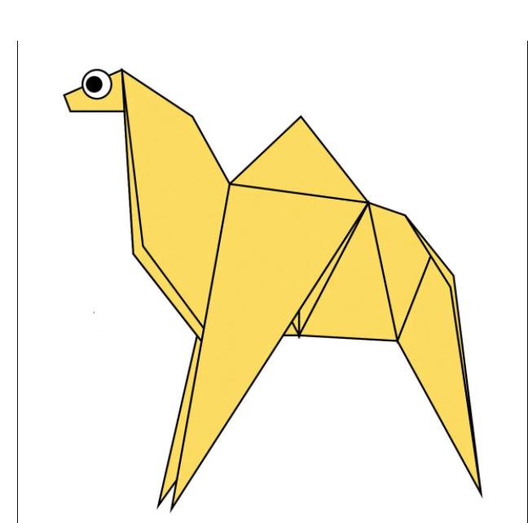
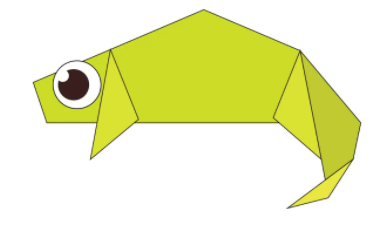
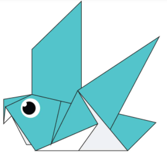
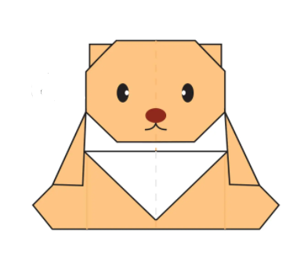
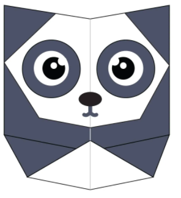
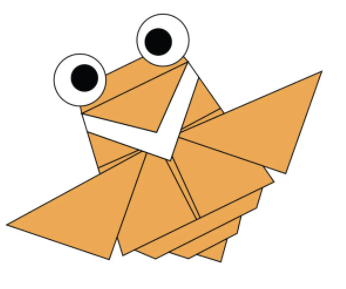

Origami Designs
About Me
Follow Us
Video Tutorials
Diagrams
This website contains steps of making different origamis by clicking on images. Here are a few origamis.

Origami Camel
Interesting Facts About Camel
- Their humps let them store up to 80 pounds of fat which they can live off for weeks and even months!
- Thanks to thick pads of skin on their chest and knees, camels can comfortably sit in very hot sand.
- There are over 160 words for camel in Arabic alone.

Origami Chameleon
Interesting Facts About Chameleon
- Unlike many lizards, chameleons can't regrow their tails.
- Their eyes can swivel around in two different directions simultaneously.
- Smalller chameleons have faster tongues.

Origami Pigeon
Interesting Facts About Pigeons
- Pigeons can recognise each letter of the human alphabet.
- Pigeons have excellent hearing abilities. They can detect sounds at far lower frequencies than humans are able to, and can thus hear distant storms and volcanoes.
- Although pigeon droppings are seen by some as a problem in modern society, a few centuries ago pigeon guano was seen as extremely valuable. It was viewed as the best available fertiliser and armed guards would even stand by dovecotes (pigeon houses) to stop others taking the droppings.

Origami Teddy Bear
Interesting Facts About Teddy Bears
- In 1912, when the Titanic sank during her first voyage, German toy maker Margarete Steiff made a black bear as mourning gifts to those who lost their friends and/or family in the accident.
- Animation movie giant Walt Disney produced the first colour cartoon film featuring teddy bears – Alice and the Three Bears – in 1924.
-
- The first British Teddy Bear Festival was held in 1989 in London.

Origami Panda
Interesting Facts About Panda
- An adult panda weight more than 45 kilos (100 pounds), and can be about 1.5 meters (5 feet) long!
- Pandas are "lazy" — eating and sleeping make their day.
- Strange behavior! Pandas like to lick copper and iron.

Origami Flying Cicada
Interesting Facts About Flying Cicada
- They improve lawns by digging tunnels that allow air into the soil. When they die, their rotting bodies put nitrogen into the soil.
- Cicadas can survive a huge fall as babies, or nymphs.
- Females may be attracted to the sound of motors. So you get to watch your dad, mom or older sibling get swarmed while they’re using the lawn mower or power tools.